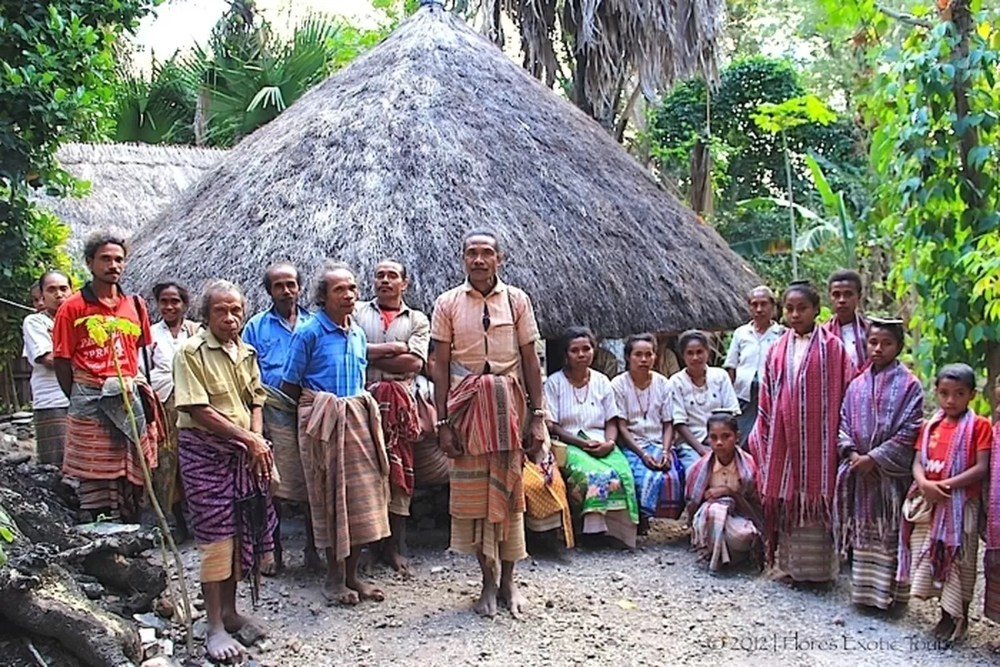
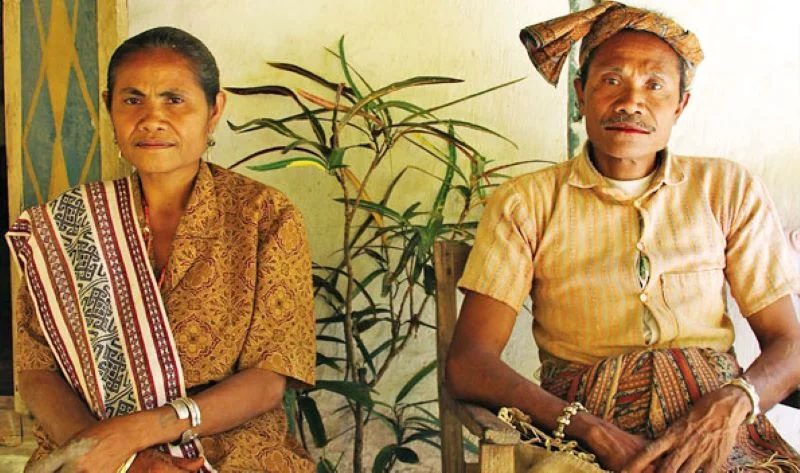
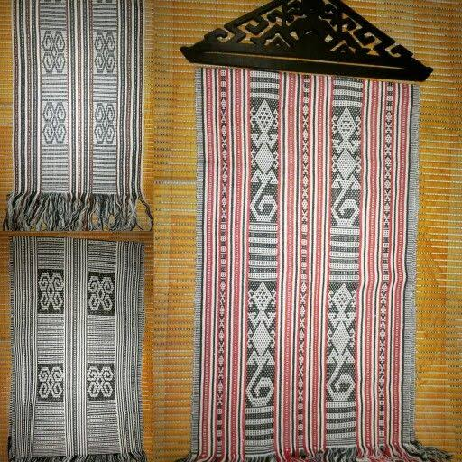
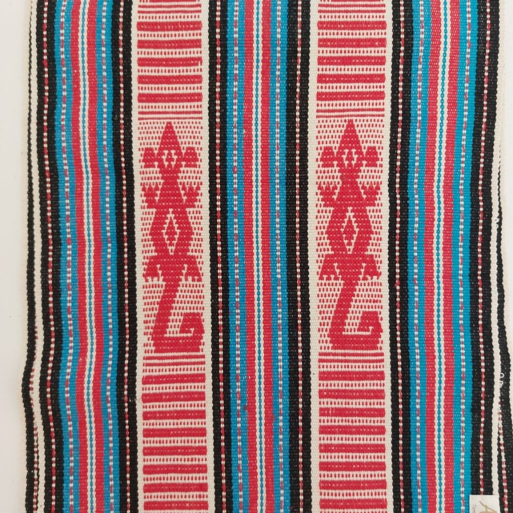
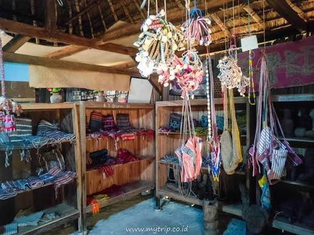

Media digital yang menghubungkan berbagai bentuk informasi melalui tautan atau node.
01
Node Informasi
02
Media Digital
03
Peta Interaktif
04
Sitemap Hypermedia
NODE 01 · MENGENAL
01 Profil Suku Boti
Mengenal masyarakat, wilayah, kehidupan, dan identitas budaya Suku Boti.

Klik gambar untuk membaca penjelasanSuku Boti – Timor Tengah Selatan
Suku Boti berada di wilayah Kecamatan Kie, Kabupaten Timor Tengah Selatan, Nusa Tenggara Timur. Kehidupan budaya masyarakatnya berkaitan erat dengan adat, hubungan sosial, lingkungan alam, dan pewarisan pengetahuan antargenerasi.
Dalam pembahasan tentang Boti, penting membedakan Boti Dalam dan Boti Luar karena kondisi kepercayaan dan kehidupan sosial keduanya tidak selalu sama.
Identitas yang perlu dipahami
Bahasa Dawan atau Uab Meto digunakan dalam kehidupan masyarakat. Boti Dalam dikenal mempertahankan kepercayaan Halaika dan aturan adat, sedangkan Boti Luar telah banyak berinteraksi dengan masyarakat dan agama di luar komunitas adat.
NODE 01A · BUSANA
Pakaian Adat Suku Boti
Bagian khusus untuk mengenal busana tradisional masyarakat Suku Boti.

Klik gambar untuk membaca penjelasanBeti Ma’u dan Tais
Pakaian laki-laki dikenal sebagai Beti Ma’u atau Beti, sedangkan pakaian perempuan disebut Tais. Keduanya berkaitan dengan tradisi tenun masyarakat Boti.
Proses pembuatan
Kapas diolah menjadi benang, kemudian diberi warna, ditenun, dan diselesaikan menjadi kain atau pakaian.
NODE 02 · MEMAHAMI
02 Falsafah dan Nilai Budaya
Nilai kehidupan Suku Boti dijelaskan berdasarkan kepercayaan, hubungan sosial, dan hubungan manusia dengan alam.
01
Halaika
Halaika merupakan kepercayaan lokal yang dipertahankan oleh masyarakat Boti Dalam. Dalam sumber-sumber tentang Boti, Halaika berkaitan dengan penghormatan kepada Uis Neno, Uis Pah, dan leluhur.
02
Uis Neno & Uis Pah
Uis Neno dan Uis Pah merupakan bagian penting dalam pandangan kepercayaan Boti. Uis Neno dikaitkan dengan langit, sedangkan Uis Pah dikaitkan dengan bumi dan kehidupan di dalamnya.
03
Hubungan dengan Alam
Penghormatan terhadap alam menjadi bagian penting dalam kehidupan Boti. Pelestarian lingkungan dipahami sebagai bagian dari tanggung jawab manusia terhadap kehidupan.
04
Aturan Kehidupan
Kehidupan adat memiliki aturan dan larangan yang menjadi pedoman bagi masyarakat yang masih menjalankan tradisi Halaika. Aturan tersebut berkaitan dengan perilaku manusia, hubungan sosial, dan lingkungan.
Catatan penting
Penjelasan kepercayaan di sini khusus membahas falsafah dan sistem kepercayaan. Informasi tentang pakaian, rumah, makanan, atau motif ditempatkan pada bagian masing-masing agar tidak tertukar.
NODE 03 · MELIHAT
03 Motif, Tenun, dan Kerajinan
Bagian ini khusus membahas kain tenun, motif, makna simbol, serta kerajinan masyarakat Boti.
KLIK FOTO

Motif Tenun
Foto dan penjelasan khusus mengenai kain serta motif tenun.
KLIK FOTO

Makna & Simbol
Penjelasan khusus mengenai arti motif atau simbol yang tampak pada kain.
KLIK FOTO

Kerajinan
Penjelasan khusus mengenai benda kerajinan, bukan pakaian atau makanan.
04 Audio Bahasa Lokal
Fitur multimedia untuk mendokumentasikan bahasa, istilah, cerita, atau wawancara budaya.
Contoh Dokumentasi Audio
File audio dapat ditambahkan pada bagian ini. Misalnya rekaman wawancara dengan tokoh masyarakat atau dokumentasi istilah lokal.
05 Video Budaya
Dokumentasi video untuk menampilkan kegiatan, tradisi, lingkungan, atau kehidupan masyarakat Suku Boti.
MEDIA DIGITAL
Dokumentasi Budaya
Bagian ini dapat digunakan untuk menampilkan video dokumentasi budaya Suku Boti agar informasi tidak hanya disampaikan melalui teks, gambar, dan audio. Video membantu pengunjung melihat secara langsung kehidupan, tradisi, dan aktivitas budaya masyarakat Suku Boti. Melalui dokumentasi ini, pengunjung dapat memperoleh gambaran yang lebih nyata mengenai lingkungan, kegiatan masyarakat, serta berbagai bentuk kebudayaan yang masih dijaga dan diwariskan dari generasi ke generasi.
05 Peta Interaktif
Lokasi dapat ditampilkan menggunakan peta digital.
06 Integrasi Teknologi AI
Website ini dapat dikembangkan dengan teknologi kecerdasan buatan untuk meningkatkan aksesibilitas dan dokumentasi budaya.
OCR OCR
Mengenali teks dari foto dokumen atau arsip budaya.
NMT NMT
Membantu penerjemahan antara bahasa lokal dan Bahasa Indonesia.
04 TTS
Mengubah teks menjadi suara untuk membantu pengguna dengan kebutuhan aksesibilitas.
07 Jelajahi Budaya
Navigasi non-linier memungkinkan pengguna berpindah dari satu simpul informasi ke simpul lainnya.
08 Sitemap Hypermedia
Struktur graf navigasi website.
09 Struktur Proyek
Hardware
Komputer/laptop, smartphone, jaringan internet, perangkat kamera, dan perangkat audio.
Software
HTML5, CSS3, JavaScript, browser, perangkat pengolah gambar, audio, dan video.
Brainware
Mahasiswa sebagai perancang, peneliti, pengelola konten, dan pengguna sistem.
MUSEUM DIGITAL
Galeri Budaya Suku Boti
Ruang visual untuk mendokumentasikan unsur budaya. Klik setiap gambar untuk melihat penjelasan lebih lengkap.
TAHUKAH KAMU?
Media hypermedia memungkinkan pengguna memilih jalur informasi yang berbeda melalui tautan antarnode.
REFERENSI ISTILAH
Glosarium Budaya
Daftar istilah dapat diperluas setelah kelompok memiliki sumber dan hasil penelitian yang tervalidasi.
Simpul informasi yang dapat menjadi tujuan atau sumber tautan.
Titik atau elemen antarmuka yang digunakan untuk mengaktifkan sebuah tautan.
Materi budaya yang menjadi fokus informasi dalam rancangan media ini.
Unsur visual yang dapat didokumentasikan dan dijelaskan dalam galeri budaya.
Penyajian dan dokumentasi warisan budaya menggunakan media digital.
ARSITEKTUR HYPERMEDIA
Peta Hubungan Informasi
Node mewakili simpul informasi, sedangkan garis menunjukkan hubungan navigasi antarnode.
PROYEK MINI OBE
Tentang Media
Bagian ini menjelaskan tujuan rancangan sebagai media informasi digital budaya lokal.
TUJUAN
Mengenalkan Budaya
Menyajikan informasi budaya lokal dalam bentuk digital yang mudah dijelajahi.
KONSEP
Hypermedia Interaktif
Menghubungkan teks, visual, audio, video, peta, dan tautan dalam satu struktur informasi.
TEKNOLOGI
HTML · CSS · JavaScript
Digunakan untuk membangun antarmuka, efek transisi, navigasi, dan interaksi pengguna.